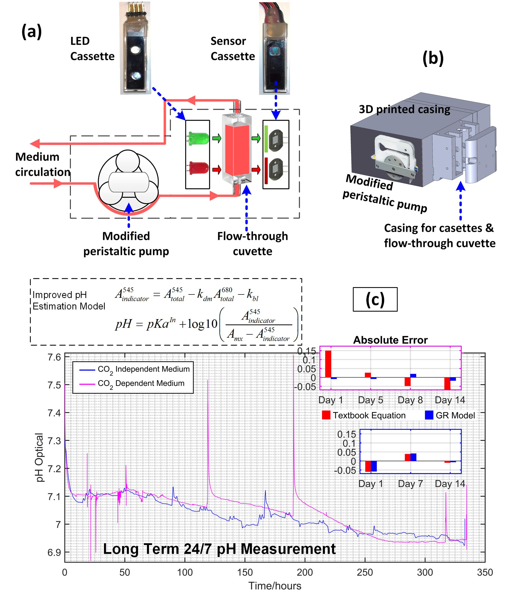
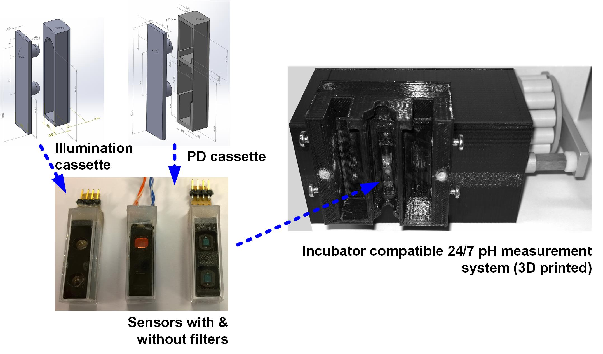
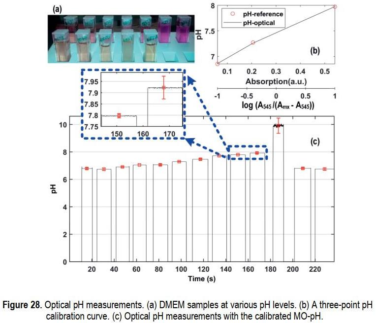
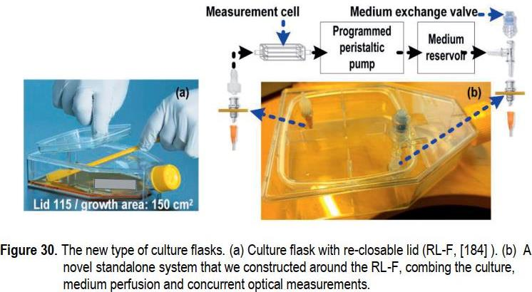
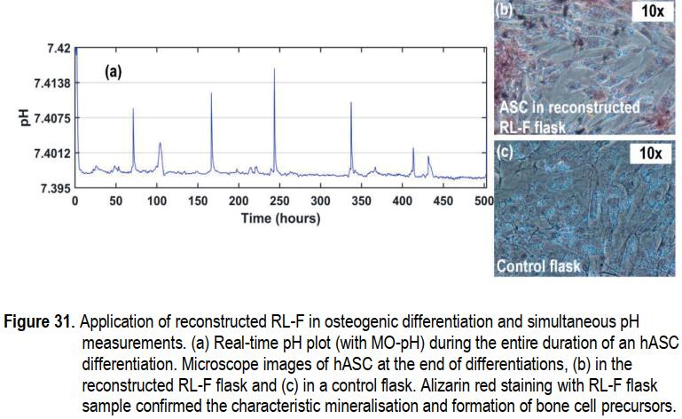
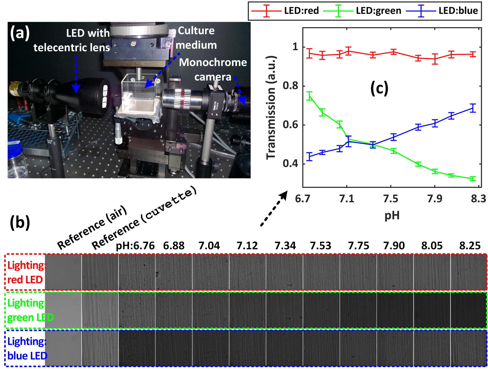
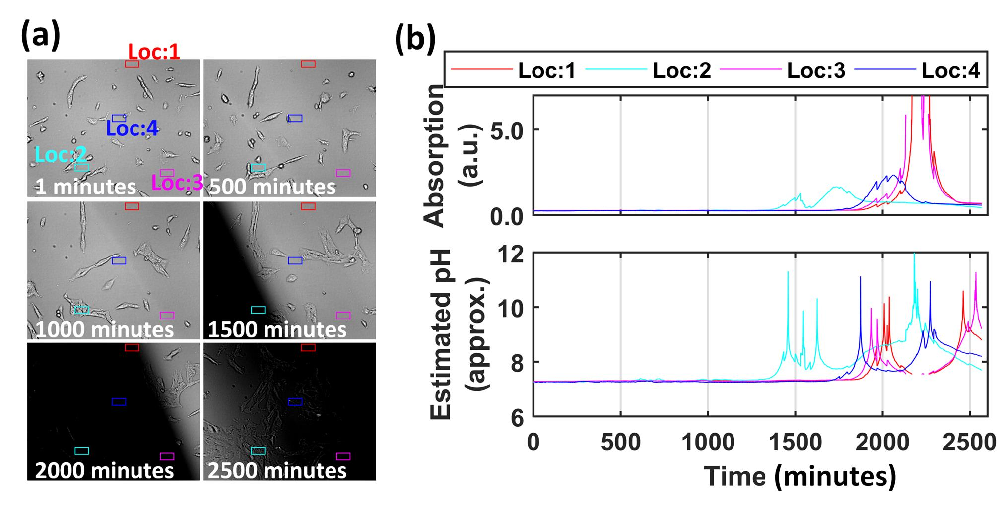
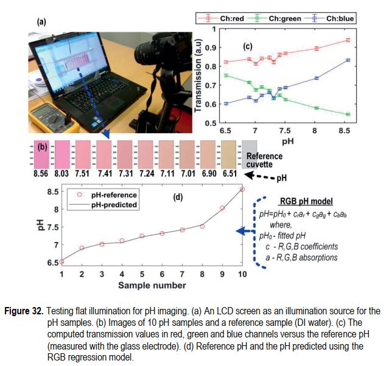
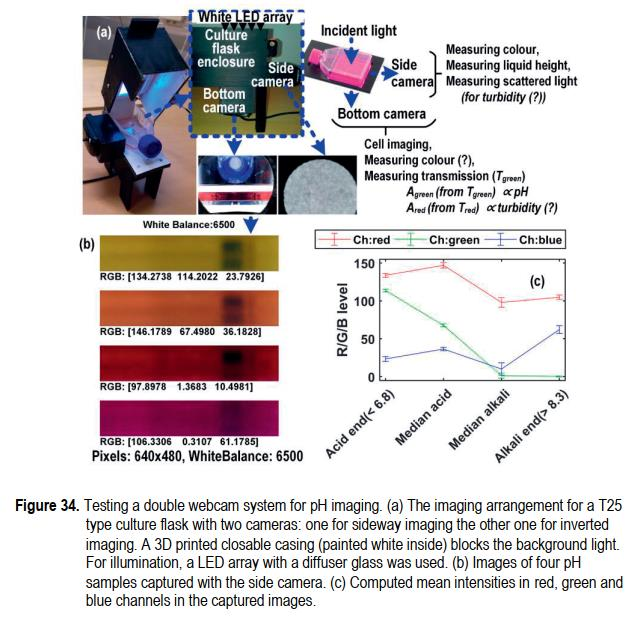

Optics and Biomedical engineering
Software development
Publications
The modular pH measurement system MO-pH. (a) Illustration of measurement principle. (b) The airtight MO-pH casing with holders for LED cassette, sensor cassette and the flow-through cuvette. (c) Example measurement results from adipose stem cell culture


Modular 3D printed cassettes/pH sensor
Article link 1
Article link 2
Non-contact optical pH measurement system, MO-pH



pH measurement without cells
Integrated pH measurement in culture flasks with re-closable lid
pH measurement in bone cell differentiation cultures


How bubbles hinder optical measurements? (a) A real case of an air bubble expansion (the black region) during the TLM of an MEF experiment. (b) The computed absorptions and pH from the four spatial locations marked as Loc1:4 at the left image. Here one can see that the bubble in the FOV causes a huge error in the computations.
Real time 2D pH monitorning in fibroblast cultures
Image based pH estimation in optical projection tomography (OPT)


Testing a flat illumination scheme for pH mapping
Webcam based pH measurement